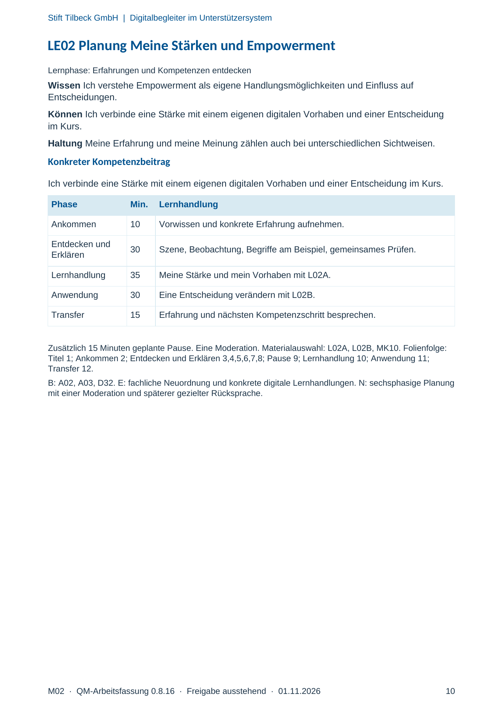
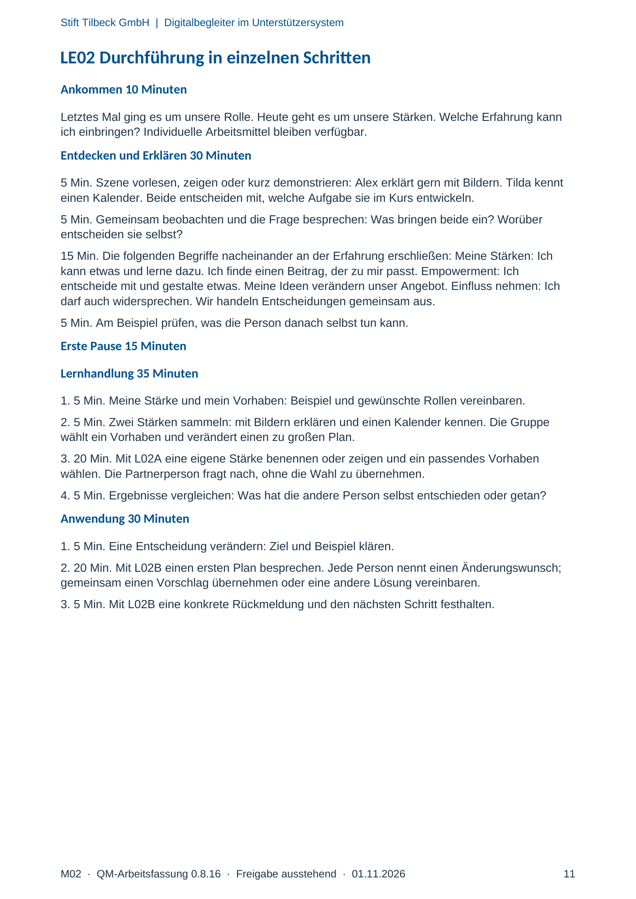
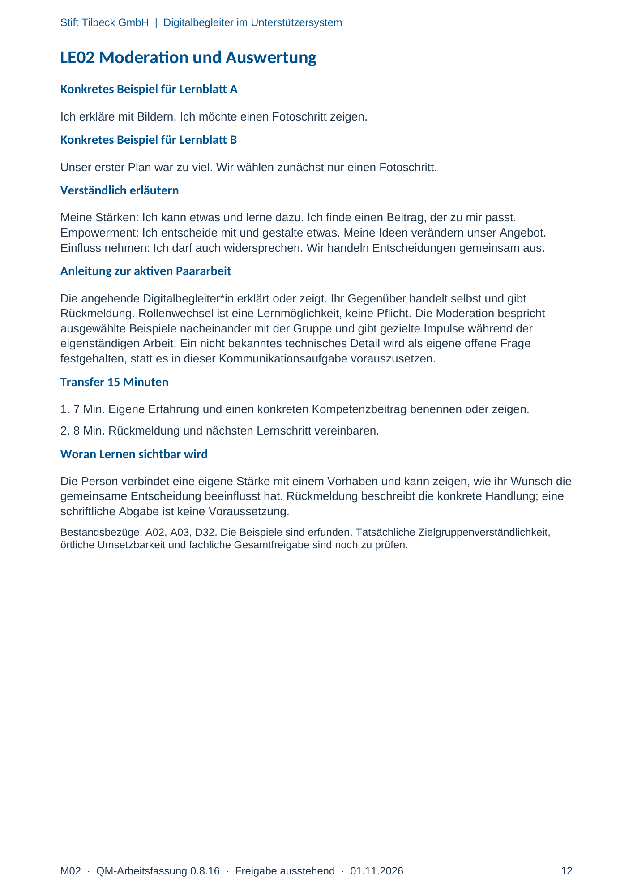

M02 · Originalseite 10, 11, 12
Handbuch und Muster
Gezielte Original-Druckauswahl.
Fragen und Ankreuzfelder werden auf dem Ausdruck bearbeitet. Die Lesefassung speichert keine Antworten.
Lesefassung · Seite 10
Stift Tilbeck GmbH | Digitalbegleiter im Unterstützersystem
M02 · QM-Arbeitsfassung 0.8.16 · Freigabe ausstehend · 01.11.2026 10
LE02 Planung Meine Stärken und Empowerment
Lernphase: Erfahrungen und Kompetenzen entdecken
Wissen Ich verstehe Empowerment als eigene Handlungsmöglichkeiten und Einfluss auf
Entscheidungen.
Können Ich verbinde eine Stärke mit einem eigenen digitalen Vorhaben und einer Entscheidung
im Kurs.
Haltung Meine Erfahrung und meine Meinung zählen auch bei unterschiedlichen Sichtweisen.
Konkreter Kompetenzbeitrag
Ich verbinde eine Stärke mit einem eigenen digitalen Vorhaben und einer Entscheidung im Kurs.
Phase Min. Lernhandlung
Ankommen 10 Vorwissen und konkrete Erfahrung aufnehmen.
Entdecken und
Erklären 30 Szene, Beobachtung, Begriffe am Beispiel, gemeinsames Prüfen.
Lernhandlung 35 Meine Stärke und mein Vorhaben mit L02A.
Anwendung 30 Eine Entscheidung verändern mit L02B.
Transfer 15 Erfahrung und nächsten Kompetenzschritt besprechen.
Zusätzlich 15 Minuten geplante Pause. Eine Moderation. Materialauswahl: L02A, L02B, MK10. Folienfolge:
Titel 1; Ankommen 2; Entdecken und Erklären 3,4,5,6,7,8; Pause 9; Lernhandlung 10; Anwendung 11;
Transfer 12.
B: A02, A03, D32. E: fachliche Neuordnung und konkrete digitale Lernhandlungen. N: sechsphasige Planung
mit einer Moderation und späterer gezielter Rücksprache.
Originalseite ansehen

Lesefassung · Seite 11
Stift Tilbeck GmbH | Digitalbegleiter im Unterstützersystem
M02 · QM-Arbeitsfassung 0.8.16 · Freigabe ausstehend · 01.11.2026 11
LE02 Durchführung in einzelnen Schritten
Ankommen 10 Minuten
Letztes Mal ging es um unsere Rolle. Heute geht es um unsere Stärken. Welche Erfahrung kann
ich einbringen? Individuelle Arbeitsmittel bleiben verfügbar.
Entdecken und Erklären 30 Minuten
5 Min. Szene vorlesen, zeigen oder kurz demonstrieren: Alex erklärt gern mit Bildern. Tilda kennt
einen Kalender. Beide entscheiden mit, welche Aufgabe sie im Kurs entwickeln.
5 Min. Gemeinsam beobachten und die Frage besprechen: Was bringen beide ein? Worüber
entscheiden sie selbst?
15 Min. Die folgenden Begriffe nacheinander an der Erfahrung erschließen: Meine Stärken: Ich
kann etwas und lerne dazu. Ich finde einen Beitrag, der zu mir passt. Empowerment: Ich
entscheide mit und gestalte etwas. Meine Ideen verändern unser Angebot. Einfluss nehmen: Ich
darf auch widersprechen. Wir handeln Entscheidungen gemeinsam aus.
5 Min. Am Beispiel prüfen, was die Person danach selbst tun kann.
Erste Pause 15 Minuten
Lernhandlung 35 Minuten
1. 5 Min. Meine Stärke und mein Vorhaben: Beispiel und gewünschte Rollen vereinbaren.
2. 5 Min. Zwei Stärken sammeln: mit Bildern erklären und einen Kalender kennen. Die Gruppe
wählt ein Vorhaben und verändert einen zu großen Plan.
3. 20 Min. Mit L02A eine eigene Stärke benennen oder zeigen und ein passendes Vorhaben
wählen. Die Partnerperson fragt nach, ohne die Wahl zu übernehmen.
4. 5 Min. Ergebnisse vergleichen: Was hat die andere Person selbst entschieden oder getan?
Anwendung 30 Minuten
1. 5 Min. Eine Entscheidung verändern: Ziel und Beispiel klären.
2. 20 Min. Mit L02B einen ersten Plan besprechen. Jede Person nennt einen Änderungswunsch;
gemeinsam einen Vorschlag übernehmen oder eine andere Lösung vereinbaren.
3. 5 Min. Mit L02B eine konkrete Rückmeldung und den nächsten Schritt festhalten.
Originalseite ansehen

Lesefassung · Seite 12
Stift Tilbeck GmbH | Digitalbegleiter im Unterstützersystem
M02 · QM-Arbeitsfassung 0.8.16 · Freigabe ausstehend · 01.11.2026 12
LE02 Moderation und Auswertung
Konkretes Beispiel für Lernblatt A
Ich erkläre mit Bildern. Ich möchte einen Fotoschritt zeigen.
Konkretes Beispiel für Lernblatt B
Unser erster Plan war zu viel. Wir wählen zunächst nur einen Fotoschritt.
Verständlich erläutern
Meine Stärken: Ich kann etwas und lerne dazu. Ich finde einen Beitrag, der zu mir passt.
Empowerment: Ich entscheide mit und gestalte etwas. Meine Ideen verändern unser Angebot.
Einfluss nehmen: Ich darf auch widersprechen. Wir handeln Entscheidungen gemeinsam aus.
Anleitung zur aktiven Paararbeit
Die angehende Digitalbegleiter*in erklärt oder zeigt. Ihr Gegenüber handelt selbst und gibt
Rückmeldung. Rollenwechsel ist eine Lernmöglichkeit, keine Pflicht. Die Moderation bespricht
ausgewählte Beispiele nacheinander mit der Gruppe und gibt gezielte Impulse während der
eigenständigen Arbeit. Ein nicht bekanntes technisches Detail wird als eigene offene Frage
festgehalten, statt es in dieser Kommunikationsaufgabe vorauszusetzen.
Transfer 15 Minuten
1. 7 Min. Eigene Erfahrung und einen konkreten Kompetenzbeitrag benennen oder zeigen.
2. 8 Min. Rückmeldung und nächsten Lernschritt vereinbaren.
Woran Lernen sichtbar wird
Die Person verbindet eine eigene Stärke mit einem Vorhaben und kann zeigen, wie ihr Wunsch die
gemeinsame Entscheidung beeinflusst hat. Rückmeldung beschreibt die konkrete Handlung; eine
schriftliche Abgabe ist keine Voraussetzung.
Bestandsbezüge: A02, A03, D32. Die Beispiele sind erfunden. Tatsächliche Zielgruppenverständlichkeit,
örtliche Umsetzbarkeit und fachliche Gesamtfreigabe sind noch zu prüfen.
Originalseite ansehen
